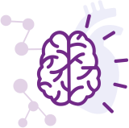

Join over 4 million people reading expert
psychologist
advice each year; get the latest news
straight to your inbox.
Our Goals & Values

We believe that therapy can help anyone to transform their life. We want to make booking counselling with qualified therapists simple, fast and accessible to everyone, wherever they are.
We believe in the human potential for change and improvement and the importance of personal growth. We want to promote psychological well-being and demystify counselling and psychotherapy through shared knowledge, education and therapeutic connection.

We are on a mission to eliminate prolonged emotional suffering worldwide. We want to make it as common and important to seek treatment for our mental health as it is for physical difficulties. We are committed to maintaining the highest quality standards across all of the therapists listed on the platform and regularly review client feedback.